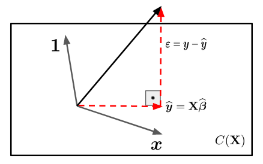

Álgebra Linear e os Estimadores de Mínimos Quadrados
Introdução
Em diversas situações práticas nos deparamos com problemas onde existe uma variável (\(X\)) mais fácil de ser observada e/ou controlada e temos o interesse de predizer outra variável (\(Y\)) que, em contrapartida, é mais difícil de ser observada e/ou controlada.
Seguramente, o modelo de regressão linear simples é uma escolha natural para descrever a relação entre as duas variáveis e então obter predições de \(Y\) atráves da relação estabelecida.
Neste modelo assumimos que a variavel explicativa \(X\) é fixa, isto é, não existe um mecanismo aleatório que gera os valores observados \(x_i\). Na prática observamos os seguintes pares \((y_1, x_1), (y_2,x_2), \ldots, (y_n,x_n)\), de forma que a relação entre as variáveis é expressa por
\[ y_i = \beta_0 + \beta_1\,x_i + \varepsilon_i, \qquad i = 1,2, \ldots, n \] em que \(\beta_0\) e \(\beta_1\) são constantes desconhecidas (parâmetros) e \(\varepsilon_i\) é um erro aleatório que não conseguimos controlar durante o experimento.
Álgebra Linear
Note que a variável resposta (\(Y\)) é escrita como combinação linear da variável independente (\(X\)) mais o erro aleatório (\(\varepsilon_i\)). Em notação matricial o modelo fica escrito da seguinte forma
\[ \textbf{y} = \textbf{X}\,\boldsymbol{\beta} + \boldsymbol{\varepsilon} \] em que
\(\textbf{y} = (y_1, \ldots, y_n)^\top\);
\(\textbf{X} = (\textbf{1} \vert \boldsymbol{x})\) é uma matrix \(n\times 2\), sendo \(\textbf{1}\) um vetor coluna de uns e \(\boldsymbol{x} = (x_1, \ldots, x_n)^\top\);
\(\boldsymbol{\beta} = (\beta_0, \beta_1)^\top\);
\(\boldsymbol{\varepsilon} = (\varepsilon_1, \ldots, \varepsilon_n)^\top\).
A componente de erro aleatório, \(\boldsymbol{\varepsilon}\), indica que \(\textbf{y}\) não possui uma relação determinística com \(\textbf{X}\). Em outras palavras, podemos dizer que o vetor \(\textbf{y}\) não esta no mesmo espaço vetorial gerado pelas colunas da matriz \(\textbf{X}\). Tal espaço será denota por \(C(X)\).
Portanto, nosso objetivo é encontrar um vetor \(\widehat{\boldsymbol{\beta}} = (\widehat{\beta}_0, \widehat{\beta}_1)^\top\) que projete o vetor \(\textbf{y}\) em \(C(X)\). Existem infinitos vetores desse tipo. No entanto, existe apenas um vetor \(\widehat{\boldsymbol{\beta}}\) no qual a distância \(\textbf{y}\) ao espaço vetorial \(C(X)\) é minima. Este vetor é a projeção ortogonal de \(\textbf{y}\) em \(C(\textbf{X})\).
Vamos supor \(n = 3\) então \(C(\textbf{X})\) é um subespaço vetorial de \(\mathbb{R}^3\) e temos a seguinte representação:

Sabemos então que \(\boldsymbol{\varepsilon}\) é perpendicular a \(C(\textbf{X})\), logo o produto interno entre \(\boldsymbol{\varepsilon}\) e \(\textbf{X}\) é \(0\). Ou seja,
\[ \textbf{X}\cdot \boldsymbol{\varepsilon} = 0. \]
Sabemos também que
\[\varepsilon = \textbf{y} - \widehat{\textbf{y}} = \textbf{y} - \textbf{X}\,\widehat{\boldsymbol{\beta}}.\]
Assim,
\[\textbf{X}\cdot \varepsilon = \textbf{X}\cdot (\textbf{y} - \textbf{X}\,\widehat{\boldsymbol{\beta}}) = \textbf{X}^\top\,(\textbf{y} - \textbf{X}\,\widehat{\boldsymbol{\beta}})\]
\[\textbf{X}^\top\,\textbf{X}\,\widehat{\boldsymbol{\beta}} = \textbf{X}^\top\,\textbf{y} \qquad (\text{equações normais})\]
Neste ponto devemos observar que só vai existir solução se:
- \(\textbf{X}^\top\,\textbf{X}\) tiver posto completo;
- o que implica que as colunas de \(\textbf{X}\) devem ser linearmente independentes.
Note que a matriz \(\textbf{X}\) é composta pelos vetores \(\mathbb{1}\) e \(x_i\). O vetor \(x_i\) só será combinação linear de \(\mathbb{1}\) se os valores observados forem todos iguais, o que na prática não faz nenhum sentido.
Dessa forma, a solução das equações normais é dada por
\[ \widehat{\boldsymbol{\beta}} = (\textbf{X}^\top\,\textbf{X})^{-1}\,\textbf{X}^\top\,\textbf{y}. \]
Conclusões
Vimos que os estimadores de mínimos quadrados podem ser obtidos utilizando ferramentas da álgebra linear sem suposição da distribuição dos erros. Contudo, para estudar o comportamento dos estimadores, realizar inferências acerca dos parâmetros e predizer novas observações será necessário impor suposições com relação a distribuição dos \(\boldsymbol{\varepsilon}\). Neste ponto que surge a estatística!